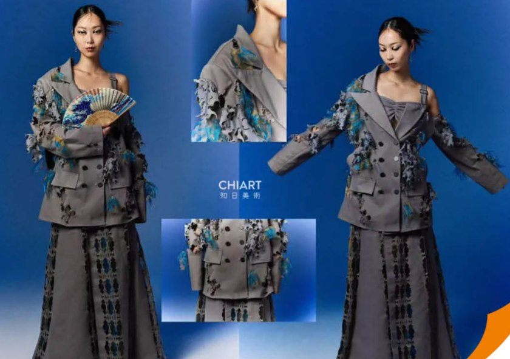

CHIART｜知日美術
「描ける」から「表現できる」へ。
「描ける」から「表現できる」へ。
美術・芸術系大学への合格をつくる。
2013年設立、日本最初期の美術全科指導の進学塾の一つ。東京・成都の双拠点体制で、純芸術からデザイン・映像・服飾・ACGまで、合格と作品づくりの両輪で指導しています。
提携・送り出しを相談する2013年設立、日本最初期の美術全科指導の進学塾の一つ。東京・成都の双拠点体制で、純芸術からデザイン・映像・服飾・ACGまで、合格と作品づくりの両輪で指導しています。
提携・送り出しを相談する2023〜2025年度、合格628枚。芸術系トップ校へ毎年合格者を輩出しています。
日本画・絵画から服飾デザイン、ポートフォリオ、基礎デッサンまで。分野ごとの専門指導で「表現」を伸ばします。



※ 在校生・修了生の作品より掲載しています（氏名は非掲載）。
純芸術からデザイン・映像・服飾・ACGまで、志望専攻ごとの専門指導で合格へ導きます。
技法の完成度だけでなく「自分の考えを表現できるか」が問われる近年の入試。両形式に合わせて対策します。
実際の授業に参加し、制作・討論・発表を通じて選考。学科の教育内容と雰囲気を体感しながら、表現力・思考力を総合的に評価されます。双方向の理解と適性を重視する入試方式です。
素描実技＋作品集＋面接の3本柱。基礎デッサン、創作思考を形にする作品集づくり、専攻理解を整理する面接対策を、段階的に積み上げて本番に臨みます。
宣传册「美術 合格采访」の全インタビューです。純芸術・デザイン・建築・映像・服飾・キャラクターまで、合格者の歩みをご紹介します（氏名は非掲載）。
合格名簿の一部です。氏名は姓のみ・伏せ字で掲載しています。
| 合格大学 | 専攻 | 課程 | 合格者 |
|---|---|---|---|
| 東京藝術大学 | 先端芸術表現 | 大学院 | 何さん |
| 東京藝術大学 | 映像研究 | 大学院 | 韋さん |
| 多摩美術大学 | グラフィックデザイン | 学部 | 徐さん |
| 多摩美術大学 | 油画 | 学部 | 彭さん |
| 多摩美術大学 | キャラクターデザイン | 大学院 | 黄さん |
| 武蔵野美術大学 | 映像・写真 | 大学院 | 陸さん |
| 武蔵野美術大学 | 彫刻 | 学部 | 劉さん |
| 女子美術大学 | 工芸 | 学部 | 姜さん |
| 京都精華大学 | 漫画 | 大学院 | 邵さん |
| 京都精華大学 | キャラクターデザイン | 学部 | 毛さん |
| 京都芸術大学 | イラストレーション | 大学院 | 刑さん |
| 大阪芸術大学 | キャラクター造形 | 学部 | 夏さん |
| 文化服装学院 BFGU | ファッションデザイン | 大学院 | 常さん |
| 東京工芸大学 | ゲーム | 学部 | 張さん |
※ 合格名簿のごく一部です。専攻別・年度別の詳細は個別にご提供します。 ／ 合格実績の全体を見る
ACG（Anime・Comic・Game）専門の学科方向・進路・カリキュラムを、専用ページで詳しくご紹介しています。